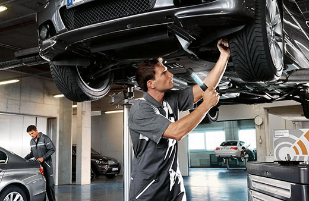

Хотите приобрести авто? Вот на что нужно обратить внимание в первую очередь при покупке подержаного автомобиля!
Кузов
Самое главное в автомобиле это конечно же Кузов.
От того в каком состоянии он находится зависит и ваша безопасность и как долго он вам прослужит.
Некоторые дефекты можно найти невооруженным глазом: небольшие вмятины, сколы, царапины, ржавчину, несовпадения оттенков. Если смотреть под острым углом, проще заметить шпаклевку или грунт. А заглянуть в труднодоступные места помогут зеркало и фонарик. При этом грамотно выполненный косметический ремонт не влияет на функциональность автомобиля. Однако не исключено, что кузов перекрасили после того, как он пострадал в аварии или просто проржавел.
Выявить скрытые дефекты ЛКП призван толщиномер. Также следует обратить внимание на стыки между деталями кузова и состояние соединительных болтов. Зазоры разной толщины и искривления могли появиться в результате ударов или некачественного кузовного ремонта. Если соединительные болты не демонтировались, они будут без царапин и сколов. Кроме того, все двери, капот, лючок бензобака и багажник должны открываться и закрываться без значительных усилий.
Диагностика двигателя и приборы для этого
Под капотом автомобиля должно быть сухо, но вычищенный до блеска моторный отсек — плохой показатель. Вероятнее всего, так хозяин пытался скрыть протечку масла. При осмотре необходимо также проверить шланги на наличие трещин и разрывов. Нестабильная работа двигателя, посторонние звуки, сизый или черный дым из выхлопной трубы — это как минимум причины для серьезной уступки в цене.
Независимо от типа трансмиссии, переключение передач не должно сопровождаться рывками, стуками и хрустом. При проверке двигателя и автоматической коробки передач полагаться только на собственные силы не стоит. К диагностике лучше привлечь профессионалов. Они внимательно осмотрят машину и расскажут о том, какие механизмы пора заменить, а также проконсультируют по ценам.
Приборы для диагностики двигателя
Продиагностируйте ходовую часть
Сохранить подвеску в хорошем состоянии в условиях российских дорог практически невозможно. К тому же состояния рычагов, стоек, амортизаторов и других элементов помогает определить соответствие реального пробега показаниям одометра. Покупателю следует совершить тестовую поездку, особенно если нет возможности проверить ходовую часть в автосервисе. Лучше всего выбрать плохой участок дороги и послушать, как подвеска отрабатывает неровности.
При движении не должны появляться скрипы, стуки и другие посторонние звуки. Их присутствие говорит о проблемах и неисправностях. Можно прокатиться самостоятельно или сесть в пассажирское кресло и попросить хозяина выполнить необходимые маневры. Например, крутой поворот, ускорение и резкое торможение. Если владелец отказывает покупателю в этой возможности — скорее всего, ему есть что скрывать. От такой покупки целесообразнее отказаться.
Оцените состояние салона

После проверки подкапотного пространства можно переходить к салону. Ищите механические повреждения: потертости обивки, царапины и трещины на пластиковых поверхностях. При качественном уходе салон остается в хорошем состоянии долгие годы. Стертые накладки на педали и руль свидетельствуют о длительной эксплуатации, а слишком потрепанные сиденья выдают автомобиль, который использовали в качестве такси.
Также следует убедиться, работают ли стеклоподъемники, салонный свет, кондиционер, подогрев сидений и другие опции. Основаниями для снижения стоимости могут стать нерабочие стеклоподъемники и регулировки, трещина на лобовом стекле или проваленное сиденье. При этом обосновать высокую цену наличием дорогой музыкальной системы или другого дополнительного оборудования продавец не вправе. Если он не согласен — предложите снять магнитолу и попросите скидку за ее отсутствие.
На заметку!
Самостоятельный поиск и покупка подходящего поддержанного автомобиля в приличном состоянии без каких-либо «подводных камней», в том числе и по документам – задача не из простых.Самостоятельный поиск и покупка подходящего поддержанного автомобиля в приличном состоянии без каких-либо «подводных камней», в том числе и по документам – задача не из простых.Самостоятельный поиск и покупка подходящего поддержанного автомобиля в приличном состоянии без каких-либо «подводных камней», в том числе и по документам – задача не из простых.